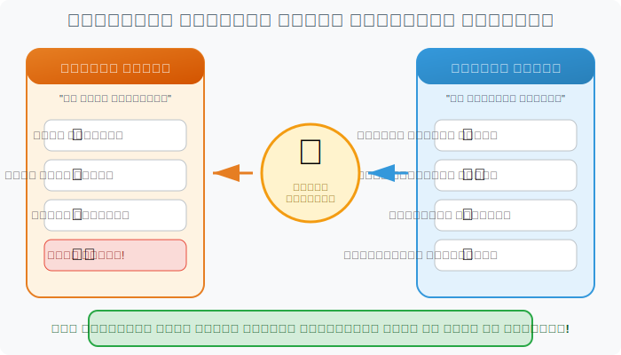
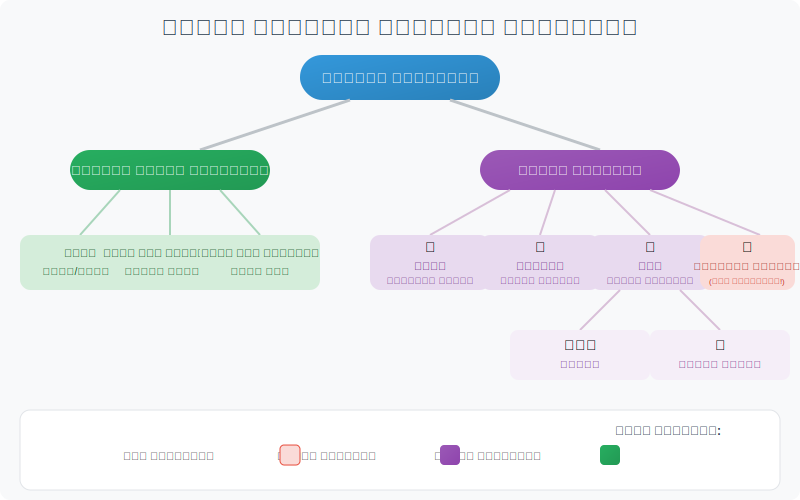
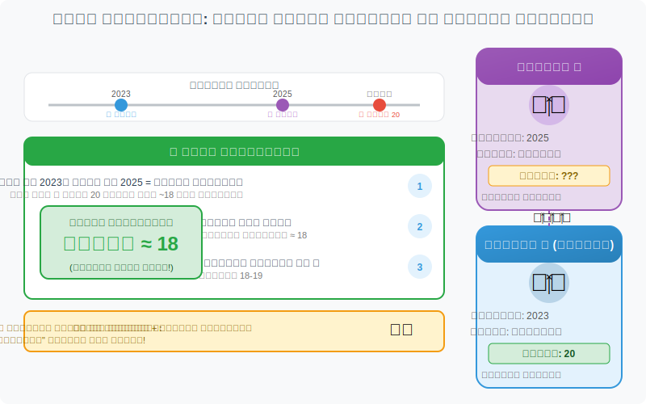
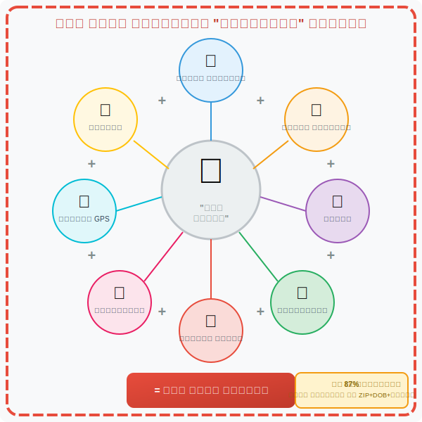
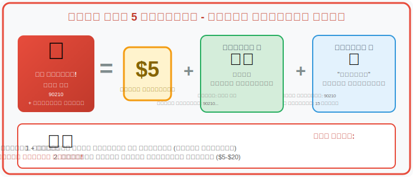
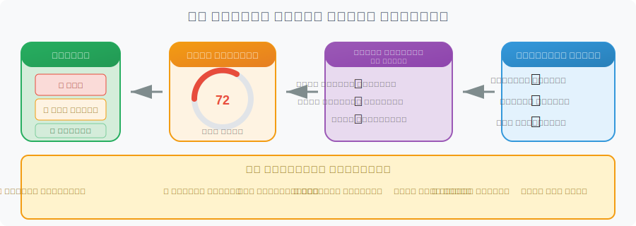
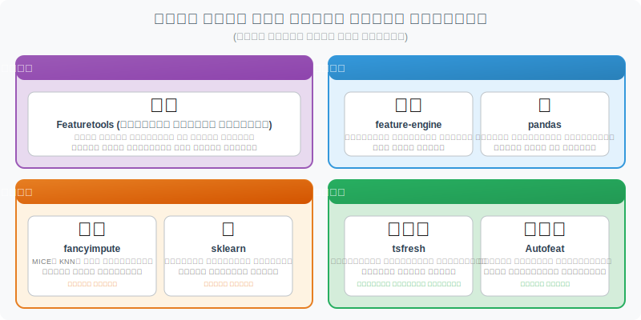

أهداف التعلم
بنهاية هذه الجلسة، سيتمكن الطلاب من:
- التمييز بين البيانات الصريحة (المسجلة مباشرة) والبيانات الضمنية (المستنتجة)
- شرح أنواع هندسة الخصائص: اليدوية، العلائقية، والآلية
- فهم كيف يمكن استنتاج القيم المفقودة من بيانات أخرى
- التعرف على مخاطر الخصوصية في مجموعات البيانات "مزالة التعريف"
- الربط بين هندسة الخصائص وتطبيقات الذكاء الاصطناعي الواقعية
- تقييم الآثار الأخلاقية لاستنتاج البيانات
1. قصة المحقق
بدون إخبارك مباشرة، ربما استنتجت:
- طفل عمره حوالي 7 سنوات يعيش هنا
- الطفل احتفل بعيد ميلاده مؤخراً
- يتعلم ركوب الدراجة
- على الأرجح يحب الديناصورات
هذه هي هندسة الخصائص في العمل!
أخذت بيانات صريحة (كعكة، شموع، دراجة) واستنتجت معلومات ضمنية (العمر، الاهتمامات، مرحلة النمو).
أنظمة الذكاء الاصطناعي تفعل نفس الشيء تماماً مع بياناتك — وغالباً تكشف أكثر بكثير مما قصدت مشاركته.
سؤال الخصوصية: إذا كان المحقق يستطيع معرفة هذا من بضعة أدلة، تخيل ما يمكن للذكاء الاصطناعي استنتاجه من بصمتك الرقمية الكاملة — المشتريات، عمليات البحث، المواقع، النقرات، والاتصالات.
2. البيانات الصريحة مقابل البيانات الضمنية
البيانات الصريحة: المعلومات المسجلة مباشرة في مجموعة البيانات — ما تقدمه بوعي أو ما تقيسه المستشعرات مباشرة.
البيانات الضمنية: المعلومات المستنتجة أو المشتقة من البيانات الصريحة — الأنماط، النسب، التنبؤات، والسمات المخفية.
أمثلة عبر المجالات
| المجال | بيانات صريحة (معطاة) | بيانات ضمنية (مشتقة) |
|---|---|---|
| التعليم | تاريخ التسجيل، تاريخ الميلاد | العمر عند التسجيل، درجة خطر الانسحاب |
| التأمين | المطالبات المقدمة، الدخل السنوي | نسبة المطالبات للدخل، فئة المخاطر |
| الرعاية الصحية | الأدوية، رموز الإجراءات | الحالات المحتملة، استنتاج الجنس |
| البنوك | المعاملات، الحد الائتماني | نسبة الاستخدام، أنماط الإنفاق |
| التجزئة | تاريخ الشراء، وقت الشراء | مرحلة الحياة، توقع الحمل |
3. تصنيف هندسة الخصائص
3.1 هندسة الخصائص اليدوية
التعريف: تحويلات مصممة بشرياً تحول البيانات الخام إلى متغيرات جديدة وذات معنى (خصائص) لتحسين التحليل أو النمذجة.
| التحويل | المثال | لماذا مفيد |
|---|---|---|
| النسب | مؤشر كتلة الجسم = الوزن ÷ الطول² | مقياس واحد يجمع قياسين |
| حسابات التاريخ | العمر = اليوم - تاريخ الميلاد | استخراج معلومات زمنية ذات معنى |
| التجميع | فئات العمر (0-20، 21-40، 41-60، 60+) | تحويل المستمر إلى فئوي |
| صيغ المجال | نسبة المطالبات = المطالبات ÷ القسط المدفوع | مؤشر مخاطر خاص بالعمل |
نقطة مهمة: هندسة الخصائص اليدوية تتطلب معرفة بالمجال — فهم ما هي تركيبات البيانات التي تكون منطقية في مجالك.
3.2 هندسة الخصائص العلائقية
التعريف: إنشاء خصائص جديدة باستخدام معلومات من سجلات مرتبطة في جداول أخرى (بيانات متعددة الجداول).
سيناريوهات مثال:
- جدول الطالب + الأشقاء: عدد الأشقاء، متوسط عمر الأشقاء، حالة تخرج الشقيق الأكبر
- جدول العميل + المعاملات: إجمالي المشتريات الشهر الماضي، متوسط قيمة الطلب، الأيام منذ آخر شراء
- جدول المريض + الزيارات: تكرار الزيارات، الوقت منذ آخر زيارة، عدد الأخصائيين المختلفين
3.3 هندسة الخصائص الآلية
التعريف: توليد العديد من الخصائص المشتقة تلقائياً من خلال دمج وتحويل المتغيرات بشكل منهجي باستخدام الخوارزميات.
أنواع هندسة الخصائص الآلية:
| النوع | ماذا يفعل | أمثلة الخصائص المنشأة |
|---|---|---|
| التوليف الرياضي | يجرب الحاصل، النسب، اللوغاريتمات، المربعات | x₁ × x₂، x₁ ÷ x₂، log(x₁)، √x₂ |
| استخراج السلاسل الزمنية | يستخرج الأنماط من البيانات المتسلسلة | المتوسط المتحرك، الاتجاه، تردد الذروة، التقلب |
تحذير: الطرق الآلية يمكن أن تنشئ آلاف الخصائص. الأكثر ليس دائماً أفضل — الكثير سيكون ضوضاء. اختيار الخصائص أمر حاسم.
4. ملء الفجوات: الاستدلال والتعويض
4.1 التعويض القائم على الاستدلال
التعريف: ملء القيم المفقودة باستخدام قواعد منطقية أو أنماط إحصائية مستنتجة من البيانات المتاحة.
أمثلة بسيطة:
- المدينة مفقودة؟ → غالباً يمكن استنتاجها من الرمز البريدي
- العمر مفقود؟ → يُقدر من سنة التسجيل + عمر الدخول المعتاد
- الدخل مفقود؟ → يُقرّب من المهنة + مستوى التعليم
4.2 التعويض القائم على النماذج
التعريف: استخدام نماذج التعلم الآلي للتنبؤ بالقيم المفقودة بناءً على الأنماط في السجلات الكاملة.
فكر فيها على أنها "تعليم الكمبيوتر التخمين بذكاء" — إذا كان الأشخاص ذوو الخصائص المتشابهة يميلون لامتلاك قيم متشابهة، يمكن للنموذج التنبؤ بما هو مفقود.
4.3 مثال عمر الطالب-الشقيق
هذا المثال الرئيسي يوضح كيف يعمل الاستدلال في الممارسة:
منطق الاستدلال:
الخطوة 1: الطالب ب سجل في 2023 وعمره الآن 20 (في 2025) ← ب كان ~18 عند التسجيل
الخطوة 2: الطالب أ سجل في 2025 كطالب سنة أولى ← على الأرجح ~18
الخطوة 3: أ هو الشقيق الأصغر لـ ب (الذي عمره 20) ← أ يجب أن يكون ≤20، على الأرجح 18-19
الخلاصة: الطالب أ على الأرجح حوالي 18 سنة
ما يوضحه هذا المثال:
- التعويض القائم على الاستدلال: استخدام قواعد منطقية لملء الفجوات
- هندسة الخصائص العلائقية: استخدام بيانات الشقيق
- استنتاج السمات: اشتقاق العمر الذي لم يُسجل
- عدم اليقين: هذا تقدير، وليس يقين!
مهم: هذا الاستدلال يعطي احتمالية، وليس ضماناً. الطالب أ قد يكون 25 وعائد للدراسة! تعامل دائماً مع القيم المستنتجة بعدم يقين مناسب.
5. حساب الخصوصية: عندما تكشف البيانات الكثير
السؤال المزعج: إذا كانت هندسة الخصائص تستطيع ملء البيانات المفقودة، ماذا يمكن أن تكشف عنك من مجموعات البيانات "المجهولة"؟
5.1 شبه المعرّفات: المعرّفات الصامتة
شبه المعرّفات: سمات ليست معرّفات مباشرة (مثل الاسم أو الرقم الوطني) لكن يمكن أن تساعد في تحديد أو تصنيف الأفراد عند دمجها.
| التركيبة | قوة التعريف |
|---|---|
| الرمز البريدي + تاريخ الميلاد + الجنس | 87% من الأمريكيين يمكن تحديدهم بشكل فريد! |
| الموقع التفصيلي + الأوقات | يمكن كشف عنوان المنزل، مكان العمل، العلاقات |
| أنماط الشراء عبر الوقت | يمكن كشف أحداث الحياة (الحمل، المرض، الطلاق) |
| تقييمات الأفلام + الأوقات | يمكن مطابقتها مع المراجعات العامة للتعريف |
5.2 كيف تفشل البيانات "المجهولة"
| البيانات المتاحة | ما يمكن استنتاجه |
|---|---|
| الإجراءات الطبية | الجنس، نطاق العمر، الحالات المزمنة |
| الرمز البريدي + قيم العقارات | فئة الدخل، الوضع الاجتماعي الاقتصادي |
| تاريخ الشراء | العمر، الجنس، مرحلة الحياة، الحمل |
| تقييمات الأفلام/الموسيقى | الآراء السياسية، المعتقدات الدينية، التفضيلات |
| بيانات الموقع | عنوان المنزل، مكان العمل، العلاقات، العادات |
| استعلامات البحث | المخاوف الصحية، الوضع المالي، الأسرار |
5.3 كوارث إعادة التعريف الشهيرة
5.4 هجوم الـ 20 دولاراً
"هجوم الـ 20 دولاراً": بحوالي 20 دولاراً فقط، أي شخص يمكنه شراء بيانات مساعدة (سجلات الناخبين، ملفات وسائل التواصل، قواعد بيانات عامة) تجعل البيانات "المجهولة" قابلة للتعريف.
الحقيقة المزعجة: معظم البيانات "مزالة التعريف" يمكن إعادة تعريفها بواسطة شخص محفز بما يكفي. السؤال ليس "هل هذه البيانات مجهولة؟" بل "كم جهد سيتطلب تحديد شخص ما؟"
إزالة التعريف مقابل التجهيل
- إزالة التعريف: إزالة المعرّفات الواضحة (الاسم، الرقم الوطني). لا يزال قابلاً للربط.
- التجهيل: مستحيل رياضياً إعادة التعريف. أصعب بكثير لتحقيقه.
إزالة التعريف ليست نفس التجهيل!
القصة الحقيقية وراء هجوم الـ 20 دولاراً
نعم، هذه ثغرة خصوصية حقيقية وموثقة جيداً! يوضح هذا الرسم البياني هجوم إعادة التعريف الشهير الذي أثبتته الدكتورة لاتانيا سويني في أواخر التسعينيات.
ماذا حدث
الدكتورة سويني، التي كانت آنذاك طالبة دراسات عليا في MIT، أثبتت أن السجلات الصحية "المجهولة" المفترض يمكن إعادة تعريفها بسهولة. في عرض توضيحي شهير، اشترت بيانات تسجيل الناخبين لمدينة كامبريدج، ماساتشوستس بحوالي 20 دولاراً وطابقتها مع سجلات خروج المستشفى المجهولة. تمكنت من تحديد السجلات الطبية للحاكم آنذاك ويليام ويلد باستخدام ثلاث نقاط بيانات فقط: الرمز البريدي، وتاريخ الميلاد، والجنس.
هل لا يزال ذلك ممكناً؟
نعم، من حيث المبدأ. وجد بحثها أن حوالي 87% من سكان الولايات المتحدة يمكن تحديدهم بشكل فريد باستخدام هذه المعرّفات شبه الثلاث فقط. السجلات العامة مثل تسجيلات الناخبين وسجلات الملكية ومجموعات البيانات الأخرى لا تزال متاحة على نطاق واسع — أحياناً مجاناً، وأحياناً برسوم بسيطة حسب الولاية.
ما الذي تغير منذ ذلك الحين؟
- قواعد HIPAA Safe Harbor تتطلب الآن إزالة المزيد من المعلومات التعريفية (بما في ذلك الرموز البريدية الكاملة في بعض الحالات)
- العديد من الولايات قيّدت الوصول إلى بيانات الناخبين
- المنظمات أصبحت أكثر وعياً بمخاطر "شبه المعرّفات"
لكن الدرس الأساسي يبقى: مجرد إزالة الأسماء من البيانات لا يجعلها مجهولة حقاً. لهذا السبب تركز خصوصية البيانات الحديثة على تقنيات مثل k-anonymity والخصوصية التفاضلية والبيانات الاصطناعية.
إذن نعم — مفهوم هذا الهجوم حقيقي جداً وأساسي في مجال خصوصية البيانات.
6. التطبيقات الواقعية (مع اعتبارات الخصوصية)
6.1 تقييم مخاطر التأمين — مفيد أم تمييزي؟
| البيانات الصريحة | الميزة المهندسة | الاستخدام |
|---|---|---|
| العمر، الجنس، الرمز البريدي | فوج متوسط العمر المتوقع | حساب القسط |
| المهنة | مؤشر المخاطر (عمل مكتبي مقابل بناء) | قرارات الأهلية |
| بيانات سرعة GPS | درجة السرعة الزائدة | تقييم مخاطر القيادة |
| وقت القيادة | نسبة القيادة الليلية | مؤشر مخاطر نمط الحياة |
تحذير الخصوصية: تقنيات تتبع التأمين تعرف أين تذهب، متى، وكيف تقود. "درجة قيادتك" تكشف نمط حياتك: الرحلات الليلية المتأخرة، الزيارات المتكررة للمستشفى، الوقت في الحانات. هل هذا تقييم للمخاطر أم مراقبة؟
6.2 الرعاية الصحية — منقذة للحياة أم منتهكة للخصوصية؟
| البيانات الصريحة | الميزة المهندسة | التطبيق |
|---|---|---|
| نتائج المختبر عبر الوقت | مؤشرات الاتجاه | توقع تطور المرض |
| تكرار الزيارات | مؤشر الاستخدام | توقع التكلفة |
| الأدوية الموصوفة | درجة مخاطر الأمراض المزمنة | تخطيط الرعاية |
تحذير الخصوصية: هندسة خصائص الرعاية الصحية يمكن أن تتنبأ بحالات لا تعرف أنك تعاني منها بعد. ماذا يحدث عندما تستنتج شركة التأمين أو صاحب العمل صحتك المستقبلية من بياناتك الحالية؟
6.3 البنوك والمالية — منع الاحتيال أم المراقبة؟
| البيانات الصريحة | الميزة المهندسة | التطبيق |
|---|---|---|
| المعاملات | تجمعات أنماط الإنفاق | كشف الاحتيال |
| الرصيد + القروض | نسبة الدين للدخل | تسجيل الائتمان |
| تاريخ الدفع | درجة الدفع في الوقت | الموافقة على القرض |
تحذير الخصوصية: تاريخ معاملاتك يكشف دينك (بقالة حلال)، سياستك (التبرعات)، صحتك (زيارات الصيدلية)، وعلاقاتك (لمن ترسل المال). البنوك تعرف عنك أكثر من عائلتك.
6.4 إرشادات أخلاقية للممارسين
قائمة التحقق للممارس
- اختبار الضرورة: هل أحتاج فعلاً لاشتقاق هذه الميزة، أم أنا فقط فضولي؟
- اختبار التناسب: هل تكلفة الخصوصية تستحق الفائدة التحليلية؟
- اختبار العكسية: هل يمكن استخدام هذه الميزة المشتقة لتحديد الأفراد؟
- اختبار الموافقة: هل سيُفاجأ المستخدمون لو علموا أن هذا يُشتق؟
- اختبار الضرر: هل يمكن استخدام هذه الميزة للتمييز أو إيذاء شخص؟
أسئلة للنقاش
- هل يجب السماح لشركات التأمين باستخدام بيانات التتبع للتسعير؟
- هل يجب أن يستطيع الذكاء الاصطناعي الصحي التنبؤ بأمراض لم تُشخص بعد؟
- من يملك الرؤى المستنتجة من بياناتك؟
7. ملخص الأدوات (ماذا تفعل، وليس كيف تُبرمج)
| الفئة | الأداة | ماذا تفعل | متى تُستخدم |
|---|---|---|---|
| يدوي | pandas | إنشاء حسابات مخصصة: النسب، فروق التواريخ، التجميعات | عندما تعرف بالضبط ما هي الخصائص التي تحتاجها |
| يدوي | feature-engine | تحويلات جاهزة: التجميع، الترميز، القياس | عندما تريد كتل بناء مسبقة |
| علائقي | Featuretools | ينشئ خصائص تلقائياً من جداول مرتبطة | عندما تمتد البيانات عبر جداول متعددة مرتبطة |
| رياضي | Autofeat | يجرب التوليفات تلقائياً: الضرب، القسمة، اللوغاريتم | عند استكشاف أي تحويلات رياضية تساعد |
| سلاسل زمنية | tsfresh | يستخرج الأنماط من البيانات المتسلسلة | عند تحليل بيانات المستشعرات، الأسهم، الأحداث عبر الوقت |
| سلاسل زمنية | kats | مجموعة أدوات فيسبوك لأنماط الوقت | عند القيام بتحليل سلاسل زمنية متقدم |
| تعويض | sklearn | ملء القيم المفقودة بإحصائيات بسيطة | عندما تكون البيانات المفقودة عشوائية |
| تعويض | fancyimpute | توقع القيم المفقودة بذكاء باستخدام الأنماط | عندما يكون للبيانات المفقودة بنية |
8. مجموعات البيانات للتدريب
| مجموعة البيانات | المصدر | ما يمكن تعلمه |
|---|---|---|
| UCI Adult (دخل التعداد) | UCI ML Repository | توقع الدخل من الخصائص الديموغرافية — تدرب على إنشاء فئات العمر، مستويات التعليم، مؤشرات حالة العمل |
| Bank Marketing | UCI ML Repository | توقع تحويل العملاء — تدرب على خصائص الاتصال، المؤشرات الاقتصادية، مقاييس تفاعل الحملة |
| NYC Taxi Trips | NYC TLC | تحليل الرحلات — تدرب على خصائص الوقت (ساعة الذروة، يوم الأسبوع)، تجميع الموقع، أنماط الأجرة |
| MIMIC-IV (الرعاية الصحية) | PhysioNet (يتطلب تسجيل) | تسجيل المخاطر السريرية — تدرب على اتجاهات قيم المختبر، تكرار الزيارات، أنماط الأدوية |
تمرين الخصوصية: أثناء تدربك على هذه المجموعات، اسأل نفسك: "ما الذي يمكنني استنتاجه عن شخص من هذه البيانات لم يُجمع صراحة؟" هذا الوعي هو الخطوة الأولى نحو علم بيانات مسؤول.
الملخص
النقاط الرئيسية
قاموس المصطلحات الرئيسية
| الإنجليزية | العربية | التعريف |
|---|---|---|
| Feature Engineering | هندسة الخصائص | إنشاء متغيرات جديدة من البيانات الخام لتحسين التحليل |
| Imputation | الاستبدال/التعويض | ملء القيم المفقودة باستخدام المنطق أو النماذج |
| Explicit Data | بيانات صريحة | المعلومات المسجلة مباشرة في مجموعة البيانات |
| Implicit Data | بيانات ضمنية | المعلومات المشتقة أو المستنتجة من البيانات الصريحة |
| Quasi-identifier | شبه معرّف | سمات يمكن أن تساعد في تحديد الأفراد عند دمجها |
| Attribute Inference | استنتاج السمات | اشتقاق معلومات حساسة من سمات أخرى |
| De-identification | إزالة التعريف | إزالة المعرّفات المباشرة (الأسماء، المعرّفات) من البيانات |
| Re-identification | إعادة التعريف | استعادة الهوية من البيانات "المجهولة" |
| Risk Scoring | تقييم المخاطر | حساب درجة رقمية لاحتمالية حدث |
النظر للخلف: الربط بالجلسة 1
في الجلسة 1، تعلمنا كيف تُعالج البيانات عبر أجهزة كثيرة — ربما في دول مختلفة، تديرها شركات مختلفة. الآن نرى تبعات الخصوصية: عندما تنتشر بياناتك عبر أنظمة لا تتحكم فيها، هندسة الخصائص يمكن أن تكشف عنك أكثر بكثير مما قصدت مشاركته.